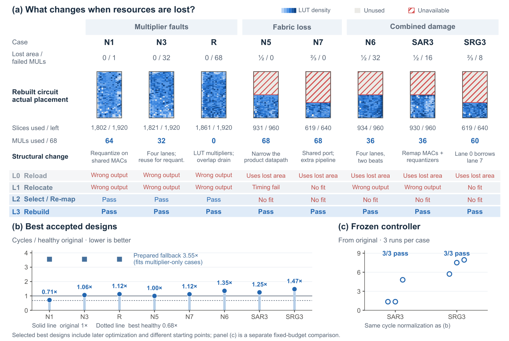
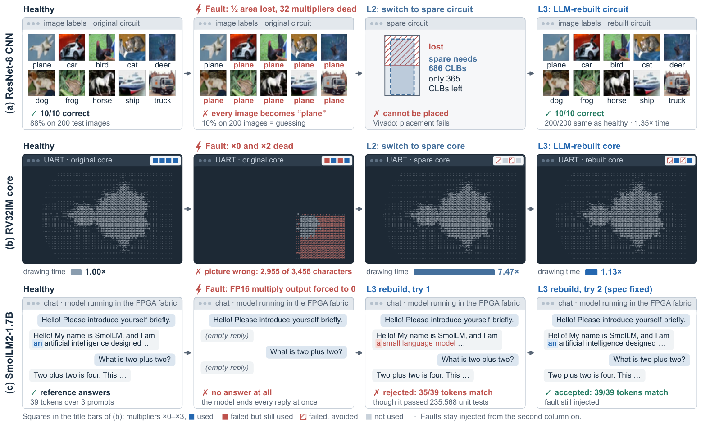

FPGA / Fault recovery
FPGA 自愈实验
如果一部分计算单元用不了了，能否用剩下的硬件算出原本的结果？我用可控故障研究 FPGA 电路怎样检测错误、调整结构，并用板上输出来检验恢复。
查看论文实验结果 ↓ 试试关闭一路乘法器 ↓
论文实验结果
这些是 ZCU104 上的论文实验。故障通过计算单元注入或布局限制模拟，修复后的应用输出由板上测试验收。各组的起始电路、预算和验收单位不同，下面分别报告。
卷积滤波器 · 验证诊断到恢复的闭环
六种乘法器故障和三种区域损失各跑五次。45/45 次在最多三次尝试内恢复，其中 38 次首次尝试就通过。
在 10 小时无人值守的实验里，共注入 53 次故障。46 次影响了输出，这 46 次都被检测并定位。切换备用电路恢复服务的时间中位数为 9.6 秒，部署比备用电路更快的重构版本的时间中位数为 13.2 分钟。另外 7 次在该次观测中未影响输出。
ResNet-8 · 当原电路和备用电路都过不了验收
只损坏乘法器时，预制无乘法器备用电路可以恢复正确输出，耗费健康设计 3.55× 的周期。研究重点是剩余区域也缩小时怎样恢复。
| 损伤场景 | 原设计 | 所测备用设计 | 择优重构结果 |
|---|---|---|---|
| N5 · 一半区域不可用 | 能放下，时序差 0.103 ns | 需 686 个 CLB，可用 365 个 | 保持健康设计的周期数 |
| N7 · 三分之二区域不可用 | 需 401 个 CLB，可用 200 个 | 需 14,029 个 LUT 单元，可用 9,984 个兼容站点 | 健康周期的 1.12× |
| N6 · 一半区域不可用，32 路 MAC 失效 | 图中十张示例都被判成飞机 | 无法布局 | 用四路分两拍完成原先八路的工作。200 张演示图逐位匹配，周期为 1.35× |
择优案例 N1 把量化缩放运算移到共享的乘加阵列，周期降到原健康设计的 0.71×。另一次更长的健康设计优化达到 0.68×。两个数字的起点和搜索过程不同。
固定预算的主实验从原始设计开始，每次最多 40 个模型请求。两组都保留工具原有报错。给模型的附加反馈里，测量组给出失败位置、面积缺口或时序信息，通用组只给未通过的检查类型。
| 损伤场景 | 测量反馈 | 通用反馈 | 测量反馈组首次通过的请求 |
|---|---|---|---|
| SAR3 · 一半区域不可用，16 路 MAC 失效 | 3/3 | 2/3 | 4、4、5 |
| SRG3 · 三分之二区域不可用，8 路 MAC 失效 | 3/3 | 0/3 | 15、27、30 |
| 合计 | 6/6 | 2/6 | 测量反馈组每个通过的设计都逐位复现 10,000 张图像的输出分数 |
这组对照的双侧 Fisher 精确检验 p ≈ 0.061，每种设定只有三次重复。重构成功后也有速度代价，例如 SRG3 的三个设计耗费健康设计约 5.7–7.9× 的周期。

展开早期控制器的结果
单次乘法器故障场景 15/15 通过，其中 10 次恢复到健康周期。累积乘法器故障的 12/12 个阶段通过，保持健康周期。去掉自检诊断的对照为 0/12，其中两次遇到模型服务错误。
累积损伤与预演 · 以前修过，下一次会更容易吗？
| 路线 | 终态测试前用的设计 | 终态成功 |
|---|---|---|
| A | 只优化健康设计，在终态直接测试生存性 | 0/9 |
| B | 在最后一档损伤下从原电路开始修 | 7/9 |
| C | 逐档修复，沿用上一阶段的设计 | 7/9 |
| D | 沿用 C 第一阶段的修复，跳过中间损伤，用相应请求数来优化，再修最后一档 | 4/8 |
在两条 CNN 序列中，最后一档损伤到来后，B 分别需要中位 4、27 次请求，C 分别需要 1、12 次。这些计数从最后一档故障到来时开始。
C 有一轮在 RISC‑V 的中间阶段失败，规则因此跳过配对的 D。这是图里的 not run，D 的分母为 8。逐对核对实际跑完的 8 对，3 对只有 C 成功，0 对只有 D 成功。样本规模适合报告观察到的方向。
独立预演实验保持失效区域不变，在预演和正式测试各抽一组坏乘法器。16 对中有 1 对预演失败，剩余 15 对里，故障到来后的请求中位数从 4 降到 1，2 个设计直接通过。预演本身耗费中位 6 次请求。对同一批完整配对逐对加回预演成本，总请求中位数为 8 对 4。两种口径分别回答故障后要做多少工作、以及总共投入多少工作。
RV32IM · 上板输出恢复与性能取舍
四组单次乘法器故障共跑了 12 次，全部通过。更难的 RV3 场景禁用 40% 的区域并让两路乘法器失效，从原设计直接修复和逐级修复都各通过 1/3。
C2 绘图演示里，原核在两路失效后仍正常结束，但画错了 2,955 个字符。备用核和重构核都能重新画对。绘图周期分别为健康原核的 7.47× 和 1.13×。
另一个 C4 案例里，ARM 上的 Linux 持续运行。备用核在检测后 14.5 秒恢复服务，重构核于 46 分钟后完成切换。
SmolLM2-1.7B · 单元测试通过，整机还会出错吗？
将 FPGA 上一个 FP16 乘法器的输出强制为零后，模型立即结束回复。第一版替换算子通过 235,568 对单元测试，整机上板仍有一个回答从第 13 个 token 开始出现偏差，三个提示合计匹配 35/39。修复后的规格补上了极小乘积的舍入边界，第二版在原 70 个 DSP 站点禁用的条件下匹配 39/39。这一案例采用辅助规格修正和完整重配置。

少一路，能算完吗？
四个乘法任务默认各占一路。默认 #2 已失效，任务 3 的输出变成 0。切换「按可用通道重排」，看哪一路接手任务 3，以及哪个任务排到了第二批。也可以关掉其它通道试试。
当前通道均失效，没有可执行的批次。
这是一个简化模型。批数描述示意中的执行顺序，实际电路还要考虑流水线、存储访问及目标时钟。
硬件会怎么坏
同一份 RTL 描述的是电路应该做什么。失效资源改变的是这份设计在 FPGA 上还能怎样实现。我的实验用两种可控方法把这两件事区分开。
计算单元失效
让指定乘法器给出错误结果，例如把输出固定为零。其余电路继续运行，可以观察到程序照常结束、结果却发生偏差的情况。
一片逻辑区域不可用
在布局时禁用指定区域内的站点。布线和时序检查照常进行，用来判断原设计能否挪进剩余区域。区域边界由实验设定。
故障由实验台注入或用布局约束模拟。功能、布局和时序的检查基于实际设计，候选电路最终还要在 ZCU104 上运行。
从重载配置到重排计算
损伤范围越大，设计可能需要改动得越深。比较修法时，我关注它允许改变什么，以及它需要什么资源。
- 重载原配置
- 重新写入原来的配置。对能靠重载消除的配置故障，这一步就能恢复。持续失效的资源仍会影响依赖它的电路。
- 重新布局
- 把同一电路放到其它健康站点。它仍需要原来的逻辑和算术资源，也要满足目标时钟。
- 切换备用电路
- 直接加载预先准备的设计。例如，用逻辑实现乘法可以绕开失效的乘法模块，也可能占用更多通用逻辑。
- 重构数据路径
- 减少同时执行的通道数，把原先并行的运算分批交给健康单元。运算顺序可以变，应用需要的输出保持一致。
怎样验收一次修复
诊断逐步变成约束。候选设计要做原来的计算，只使用健康资源，在目标时钟下运行，并在应用中给出正确输出。
描述损伤
收集自检或板上测试的输出，确定故障的计算单元及可用区域。把结果转成修复时的资源约束。
提出候选 RTL
把原设计、功能规格和资源约束交给语言模型。它可以调整并行度、共享算术单元或改变数据流。当候选没过检查，错误位置、资源缺口或时序报告可帮助下一次修改。
检查功能、资源和时序
用仿真输出比对参考结果，核对候选没有依赖故障单元，再完成布局布线并检查目标时钟能否达到。
加载并运行应用
在板子上运行与故障前相同的任务，核对实际输出。验收后再比较每次推理、绘图或指令测试用了多少周期。
一次验收回答的是「这个候选是否通过这组测试」。不同的故障条件、输入和时钟约束都需要重新检查。
同一套问题，放进四种应用
卷积滤波器
检查故障前后的像素结果，从一个计算链短、方便逐元素检查的应用开始。
图像分类加速器
核对完整的输出分数。这个任务能观察并行通道缩减后，功能是否保留，以及每张图片要多花多少周期。
RISC‑V 处理器
用指令结果和应用输出来检查修复。例如，一幅由串口字符画出的图能把个别算术错误变成可见的图案差异。
可编程逻辑上的语言模型
先测算术单元，再比较整模型的生成结果。前者定位某个运算，后者检查该运算放回整条推理路径后会怎样影响输出。
读结果时，我把三笔账分开
恢复成功
是否得到通过全部验收的设计。比较两种修法时，要看失败的轮次是否也计入分母。
恢复后速度
在功能正确的设计之间，比较同一任务的周期和资源。交互示意里的「批数」只说明分时执行的代价。
修复过程成本
记录从看到故障到得到可用电路之间的搜索、编译和上板时间。若提前准备候选，也要另外记下准备成本。